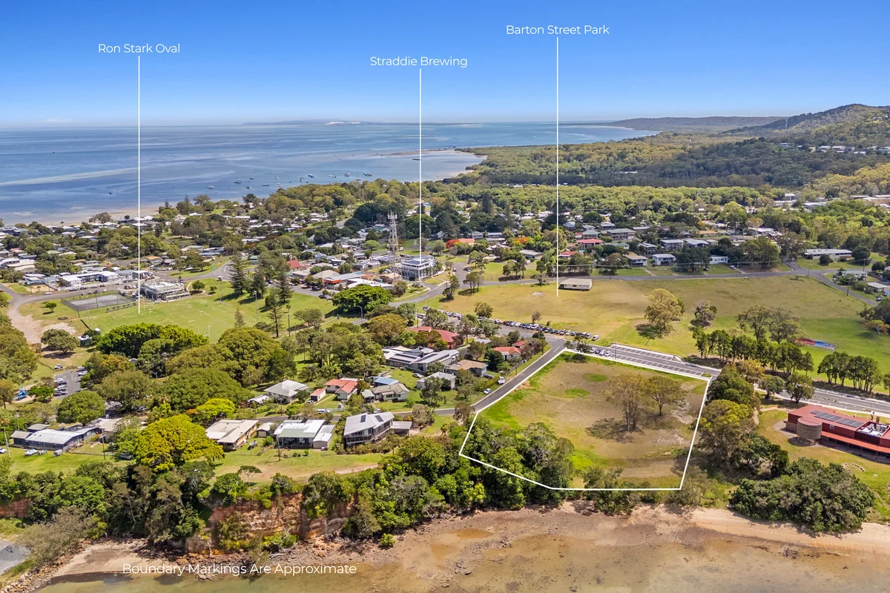
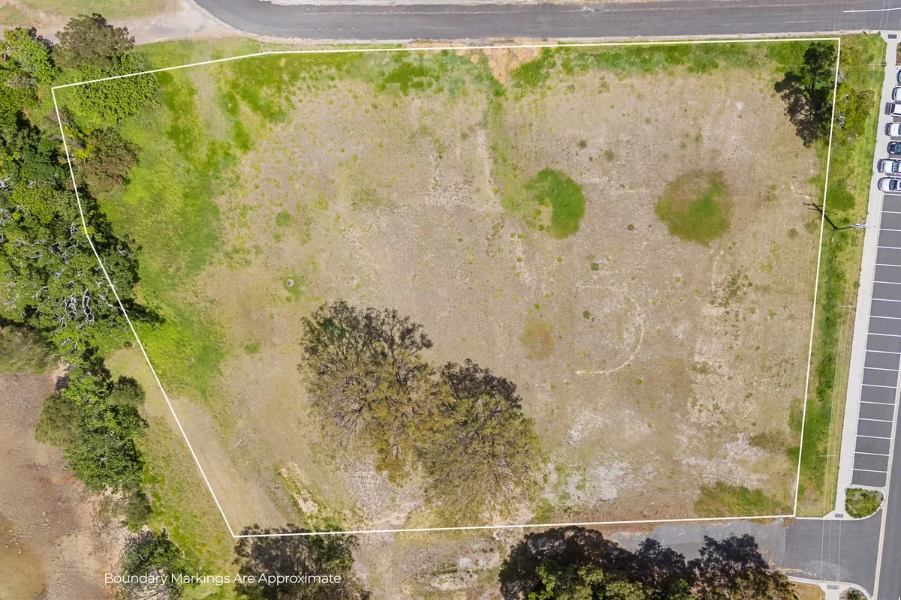
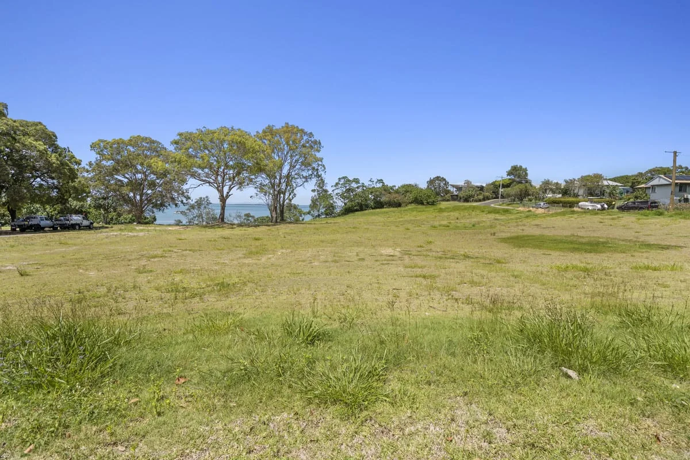
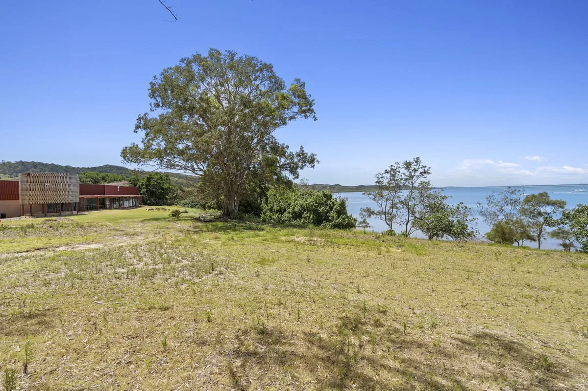
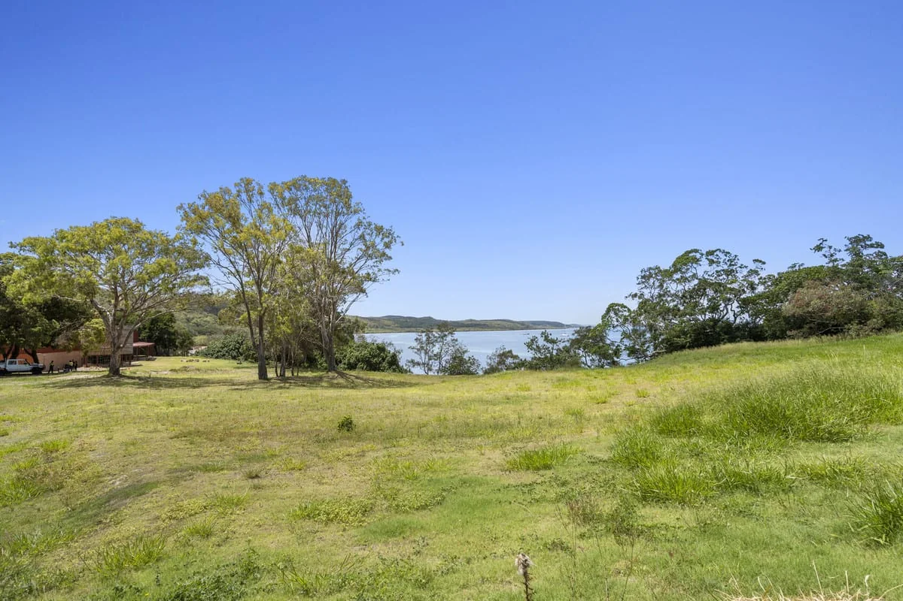
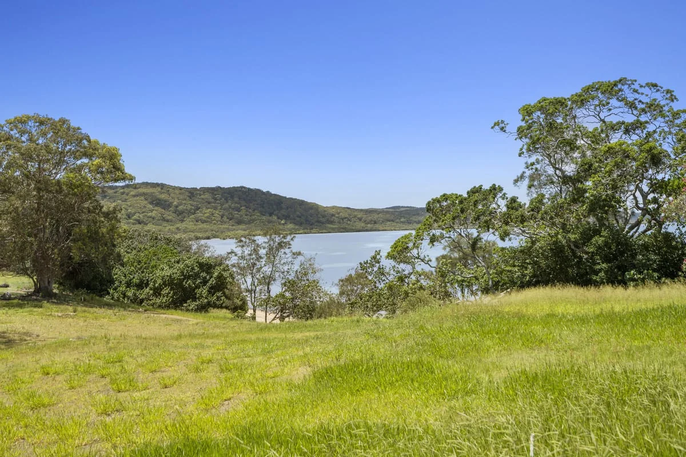

10-12 Ballow Road
Between QUAMPI and the ferry gateway. Strong candidate for public sand, screen, market and visitor use, but the slope may also suit media, capsule/XR or mixed uses if sport works better on flatter ground.

The main site
The site sits between QUAMPI Arts and Culture Centre at 14-16 Ballow Road and the Junner Street ferry gateway. It is close to visitor flow without being the ferry terminal itself.
What the listing says
The public property listing describes 10-12 Ballow Road as a 7,727 square metre freehold waterfront development site, owned by the State of Queensland, near ferry services and local amenities.
The power of the site is its position: next to QUAMPI, near the ferry upgrade area, and close enough to sport, shops and parks to make public use believable. The next pass still checks planning, culture, access, traffic, flooding, parking, maintenance, safety, insurance and the business case.
Read the land first
The photos show the land falling from the north and north-east down toward the south-west. Any sport, market or screen layout has to work with that slope, keep access practical, protect the bay edge and use the flatter pockets carefully.






Why Dunwich / Goompi
The $41 million Dunwich ferry terminal upgrade is centred on Junner Street. Nearby sites need to be compared by fit, not forced into one favourite layout: slope, flat ground, leases, neighbours, toilets, traffic, noise, power, storage, public value and who is ready to help.
Between QUAMPI and the ferry gateway. Strong candidate for public sand, screen, market and visitor use, but the slope may also suit media, capsule/XR or mixed uses if sport works better on flatter ground.
A vacant commercial building nearby. It makes sense as an early Ready S.E.T. Co-op and hyperlocal media front desk if lease, access, fit-out and owner terms stack up.
The flat, high-movement ferry-terminal area near Harold Walker Jetty and public toilets. If the public works design allows it, this may carry sport, markets, makerspace or visitor services better than a sloping block.
Ron Stark Oval and the North Stradbroke Island Rugby League and Allsports Club are existing sports anchors. They could help shape, strengthen or slow any sports-precinct conversation.
The capsule surge lab is site-neutral: short stays, workforce rest, simulation rooms, local AI training, health-surge support and XR/civic rehearsal where the fit is strongest.
A repair, prototype and training space could sit near ferry logistics or another suitable shed. Heavy tools, noise, access, insurance and public learning all need to be checked together.
Public notices, training clips, local updates, ferry information, screen-ready stories and business calls could grow from 9 Ballow, 10-12 Ballow and the wider noticeboard network.
Sandworm-style subterranean systems are long-range R&D for services or transport tunnels, not a promise to dig under Ballow Road. Keep it as a maker-space research thread until serious review is ready.
Sports club, co-op, media, maker, capsule, market and visitor uses can swap sites if the evidence says so. The public question is what works first, where, and with which partners.